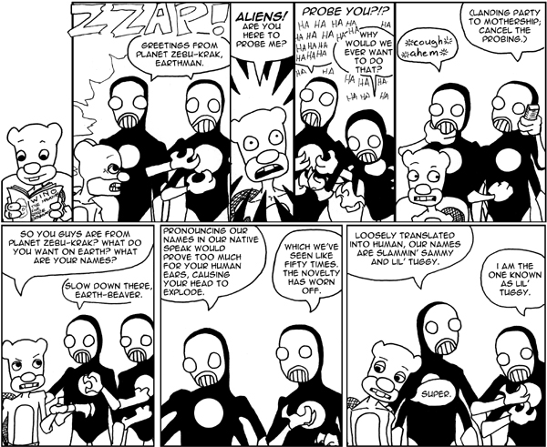

Can’t Stop the Serenity: Beth Nelson, global coordinator
|
image / courtesy Can’t Stop the Serenity
Fans of Joss Whedon’s cult TV series Firefly are no strangers to fundraising. Back when Fox cancelled the show after airing only 11 of the 14 episodes (out of order, at that), Firefly fans bought over 200,000 Firefly DVD sets. That number impressed Universal Pictures enough that they greenlighted the movie version, Serenity, which Whedon had been tirelessly petitioning to get made. Since there will no sequel to Serenity, which was released in 2005, the fans had to find some other geeky pursuit to throw their money at. The solution was Can’t Stop the Serenity, a yearly screening of Serenity whose proceeds benefit the charity Equality Now. This year’s global coordinator, the passionate and talented Beth Nelson, is an Austinite. That Other Paper’s Christine Acker recently sat down with her to talk about Can’t Stop the Serenity (and got a little bit of pining over Nathan Fillion in along the way).
That Other Paper Tell me about Can’t Stop the Serenity.
Beth Nelson Can’t Stop the Serenity started in 2006 as a way to celebrate Joss Whedon’s birthday and also to get the fandom dedicated to more charitable causes. It was created by the One True b!X. That’s his nickname. I think his real name is Christopher Franconis. Over 40 cities got involved the first year of Can’t Stop the Serenity and raised around $65,000. It was all last-minute; they didn’t have much time to get these events running. All proceeds benefit Equality Now, which works to end violence against women and girls, which is a lofty goal. [laughs] Jessica Neuwirth is the founder of Equality Now, and her teacher was Joss Whedon’s mother, who has been a feminist since childhood. She’d always teach her female students to be empowered women. From Jessica’s experience with Joss’s mom, she decided to take her soapbox passiveness and turn it into something more active and actually run a charity, which is how Equality Now was born. They get involved all over the world in causes like ending female genital mutilation and sex trafficking. In 2006 there were 17,000 girls trafficked for sex in the United States alone. They protest the violation of civil liberties against women and girls from all over the globe. In 2007, 47 cities got together and watched the Big Damn Movie and we made over $100,000 for Equality Now. This year our goal is to have 55 cities involved and make $150,000. Even if we don’t hit that, the way I look at it, as much money as we can make, Equality Now can use. They deserve it.

This Saturday: No meat, no mercy
|

ilovemikelitt is at it again, this time bigger and more vegan than ever – it’s the return of the Veggie Hot Dog Eating Contest!
This is the second year of the event, and it’s going down this Saturday, June 20, at Scholz Garden (1607 San Jacinto Blvd) from 1–4pm. Pay $5 to get in, and you’ll get a veggie dog and as much Nada Moo ice cream as you can eat (until it runs out).
This bad boy will be hosted by our friend Chris Trew (TOP contributor and ColdTowne member) and Deb O’Keefe (101X morning show co-host).
Wanna compete? They’re especially in need of doubles contestants. You can sign up by going to ilovemikelitt.com.
An open letter to my bank tellers
|
Open Letters
photo / Kristin Hillery 
I work downtown, just blocks away from your Congress Avenue location. Since my office doesn’t have a lot or a garage, sometimes I unfortunately have to park on the street. What does this mean? I need quarters for the meter. And where’s the easiest place to get these quarters? My bank.
But giving out rolls of quarters is apparently too much for you people to handle. Gosh, like, I don’t even know if I have any quarters left in my drawer. We’ve given out, like, a thousand quarters this week!
Oh, really? I’m terribly sorry for walking into a bank – where I have two accounts – and asking for my own money like a stupid idiot! And why am I dumb enough to assume that you guys would even have money on hand? I knew I should have just asked the Jamba Juice boys next door.


Recent comments